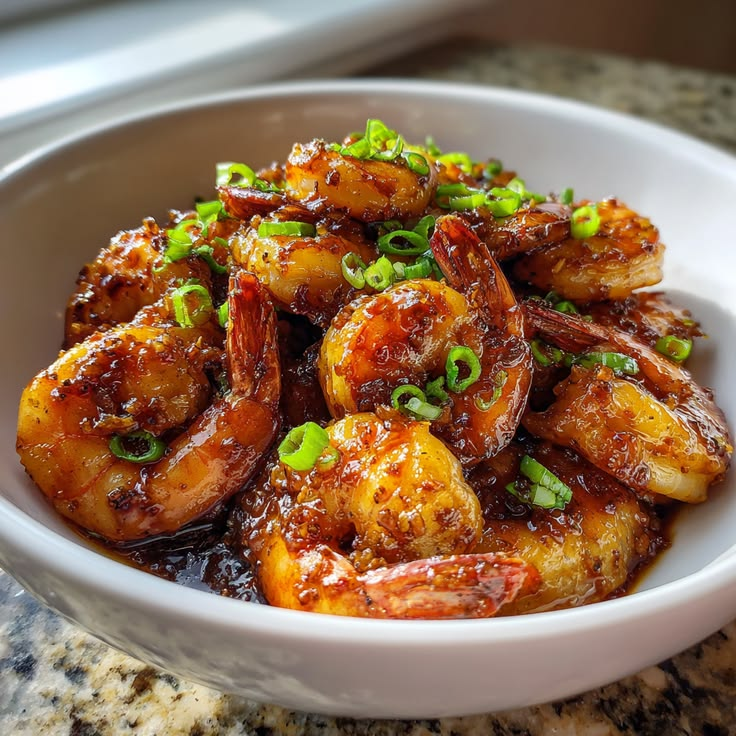

SEAFOOD SPECIAL
GFC • FOOD STORY
Coastal Delicacy: The Irresistible Taste of Golden Spiced Prawns
Crispy on the outside and wonderfully juicy inside, our seasoned prawns deliver the vibrant coastal seasoning that seafood lovers crave at GFC.
View on Menu →